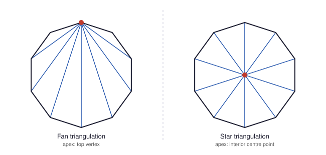
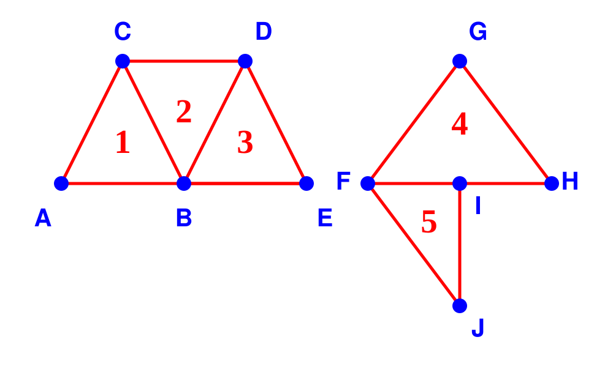
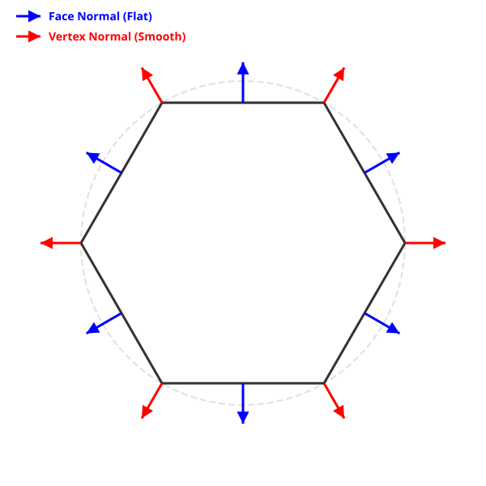

Page 4: Meshes: What you need to know
Triangles are the primitive for doing interactive 3D graphics. The reasons for this will become clear as we explore how things work under the hood. The graphics hardware provides other primitives (such as points and lines), but these are used less often, and are often implemented as special cases of triangles. Higher level APIs may provide other primitives, but inside, these are often represented as (or converted to) collections of triangles.
Understanding collections of triangles is essential for computer graphics.
The term mesh refers to a collection of simple shapes that are connected together. In computer graphics, we almost always deal with surface meshes - where the pieces are polygons. And in class, we will almost exclusively work with triangle meshes where each piece is a triangle. There is not much loss of generality: any polygon may be broken into triangles (although, there are reasons we might not want to do that).
There are a few things you need to know about meshes:
- What makes for a good mesh? We don’t just want any old collection of triangles. We want certain properties that make things work better.
- What data structures do we use to store meshes? How do we use this to store information related to the mesh?
- How does this work in three.js? This is a preview of what we need to do for the hardware.
- How do we work around the restrictions of #3?
The lecture video covers these topics concisely, although in reverse order.
Part of 2023 Lecture 17 | Slides
Good Triangles
In graphics we have some preferences for our triangles.
{kind=link}
1. Good Aspect Ratio (Not Long and Skinny) A good triangle should have relatively balanced proportions rather than being “too long and skinny”. Triangles that are closer to being equilateral are considered “well-conditioned.” There are a wide range of numerical issues, for graphics and other usages, where having triangles where the sides are very differentt can be problematic. It can cause problems in drawing, in shading and texturing (topics we will discuss in this workbook), in performing simulation, and other things.
2. Good Size (Not Too Small) While breaking an object into many smaller triangles allows for finer detail, triangles should not be too small. If triangles get too small—specifically, smaller than a single screen pixel—it creates sampling problems where multiple different triangles occupy the exact same pixel.
3. Correct “Winding” Direction (Front-Facing) A good triangle must be defined mathematically so that it has a clear “front” and “back.” Because triangles are infinitely thin, they technically don’t have two sides in the real-world sense. In 3D graphics, a triangle’s outward-facing direction is determined by the order its vertices are listed in the code—typically in a counterclockwise order. Using the right-hand rule, this specific vertex ordering defines an outward-pointing normal vector.
Two key reasons for caring about the winding direction of triangles:
- Back-Face Culling: To save processing power, the graphics hardware defaults to not drawing triangles that face away from the camera. It determines this purely by looking at the triangle’s winding direction. If a triangle is accidentally ordered clockwise, the engine will assume it is the “back” of the object and make it invisible.
- Lighting Calculations: The surface must face the light to be illuminated. If a triangle’s vertices are ordered backward, its normal vector will point inward, away from the light source, meaning that face will catch no light and render completely dark.
Here’s a simple example of the kinds of tradeoffs we need to consider when making a triangle mesh:
{kind=link}

Both of these are meshes for the same shape (a regular 10-sided polygon). On the left, we only use the points of the polygon. This leads to some long and slender triangles. On the right, we insert a point in the center. This leads to triangles that have a better aspect ratio, and are symmetric (they are all the same). But there are costs: we have more triangles. And we have introduced a new point that is not part of the polygon - we need to compute it so it is exactly in the right place.
Good Triangle Meshes
For now, a mesh is a connected collection of triangles. (In three.js Mesh means something else.) We are limiting ourselves to triangle meshes for now.
A mesh contains information about the vertices as well as how those vertices are connected. There are three types of “objects” that we encounter: the triangles themselves, the vertices (the corners of the triangles), and the edges (the connected pairs of vertices, and pairs of triangles). If the triangles connect, they will share vertices and edges. Any edge is part of 1 or 2 triangles; a vertex might be part of any number of triangles.
Here is a diagram to help with the explanations:
{kind=link}

The first mesh has 3 triangles (1,2,3), made from 5 vertices (A,B,C,D,E). The second mesh is two triangles (4,5), made from 5 vertices (F,G,H,I,J). We will use these to discuss some important properties of meshes.
Generally, we want our meshes to have some properties that make them “well-formed”:
-
No T-Junctions - triangles either share an edge (2 vertices) or not. Having a vertex that is “on another triangle’s edge” is a bad idea. You can see this in the second picture. Vertex I is a T-junction: the point I is on the edge FH. For these triangles to “touch,” point I must be in exactly the right place - otherwise there will be a “crack” (yes, that’s a technical term). If it is off by a little bit (for example, because of rounding error or because we edit triangle 4), we get a crack. Therefore, if we want triangles to connect, they must share an entire edge - it is the only way to prevent cracks (we can’t rely on perfect arithmetic). Cracks also cause problems in drawing (simple version: rounding to pixel values can cause errors).
-
Consistent Orientations - In 2D, all triangles should be either clockwise or counter-clockwise. In Picture 1, our triangles are ABC, BDC, and BED (counter-clockwise) or ACB, CDB, DEB (clockwise). If we had ABC, BCD, BDE, they would be inconsistent. When the triangles are consistent, each edge has (at most) one triangle in each direction: note that the edge BC is BC in ABC but CB in DBC. In 3D, having consistent orientation is important because it means the cross products (normal vectors to the triangles) point in the same direction. Usually, we like to have them point outwards. We’ll see this come up below in the backfacing example.
-
Vertex Sharing - If triangles share a vertex, we prefer to store this as a single vertex (that multiple triangles refer to), rather than as a bunch of different vertices. In the old days, this was an important performance consideration, because each vertex must be transformed, and the transformations were expensive. Now, sharing is important for other reasons. For example, it makes it easier to keep vertices consistent. In the example, note how vertex B is part of 3 triangles. If you move vertex B, the triangles stay connected. Vertex sharing helps avoid cracking (if you have two vertices, numerical errors might cause them to be slightly different).
-
Good Triangles - As described above, we avoid triangles that are long and narrow or too small.
Edges are useful data structures because they help relate triangles and enforce consistency. They are useful in building tools to edit meshes. But we generally don’t use them much in computer graphics. The data structures that explicitly represent edges are cool and useful if you are changing meshes, but we won’t learn about them in class - we’ll make our meshes and not change their connectivity.
For graphics, the main things with meshes are the vertices and the triangles. The data structures need to represent these two things.
Because of vertex sharing, we often prefer to use an indexed representation. With an indexed representation, we keep an array of vertices (each with associated information). Each triangle just needs to have a list of the indices into the array of vertices. So, for the left figure, our “vertex list” would be [A,B,C,D,E], and our triangle list would be [0,1,2, 1,4,3, 1,3,2] (ABC, BDC, and BED).
The alternative to well-formed meshes is an unorganized collection of triangles. This is sometimes referred to as triangle soup. Having structured meshes (vertex sharing, etc.) is useful because it makes it easier to maintain the collection (e.g., avoid cracking, having consistent normals, …). The efficiency gains of structured representations may be lost because we end up splitting vertices.
Where does information live on Meshes?
Consider specifying colors for the mesh. We might want to have the entire mesh be one color. We might want to put a color on a triangle (if we want to have each triangle be a solid color). We might want to allow each vertex to have a separate color (so the triangle has three colors, and interpolates between them in between). Here’s an example of each one:
The left one has a single color for the entire mesh (yellow). The middle one has a color for each triangle (yellow and orange). The right one has vertex colors (see how the colors interpolate over the triangles).
We would like to have the flexibility to specify the information (color) anywhere we might like. This requires fancy data structures.
However, there is an additional complication: because of how the graphics hardware works, information generally needs to live either on the whole mesh (it is “uniform” over the whole collection of triangles) or at the vertices.
If you use the rotation slider, you will see how the lighting changes based on the surface orientation. This will be more interesting in a later example. But also notice… if you turn the object so far that you are looking at its back, it disappears. We’ll explore that problem below when we discuss “backface culling”.
Vertex Splitting
For reasons relating to how the graphics hardware works, programs prefer to keep information associated with the vertices (rather than the triangles). The attributes (like position and color) belong to the vertices. The triangles are created as sets of three vertices. They don’t store any information other than the indices of the vertices (in fact, sometimes they don’t even store that… but more on that in a moment).
Now, you are hopefully wondering… how do we deal with the case where one vertex needs to have more than one color? For example, those points in the middle where the orange and yellow triangles connect - those vertices are both yellow and orange (depending on which triangle is using it). How can we have different attributes on shared vertices? (we have the same problem with normals - the points in the middle are shared by both triangles, and each triangle has a differen color).
The short answer is: we cannot. If all information lives on the vertices, we can only share vertices that have all their attributes in common. So, in this example, we cannot have a vertex that is both orange for one triangle and yellow for the other: we need to split the vertex into two different vertices. This goes against our goal of sharing.
This “all information on the vertices” is inconvenient: for the middle pair of triangles, we can’t simply make 4 vertices, and specify the colors of each triangle. We need to make 6 vertices, and set the color correctly for each one. This might seem wasteful, and it is a bit of a hassle, but the simplicity of having only one place for “all” information (all attributes are on vertices) makes many things simpler. It’s how the graphics hardware works (we’ll learn more later in the class). So it can be more efficient (the hardware is optimized to do simple things fast).
Normals
Assuming that the triangle is not degenerate (if two points are co-linear, the triangle becomes a line segment, and doesn’t have a well-defined normal vector), a triangle has a well-defined normal direction. It can point one of two ways.
However, we often do not use the actual normals of triangles. Instead, we define normals at vertices, and compute these values based on the object that we are trying to create.
Here is a 2D example (using line segments, rather than triangles). We approximate the circle with a polygon (here a hexagon). We can either have each line segment have real normals, or use the normals to the actual shape.
{kind=link}

For the case of the circle, all the normals point in the same direction (outward from the center). But an important difference: with the vertex normals, each line segment has two normal directions. We can interpolate between them to have a smoothly varying normal vector. While this is only an approximation, it does have the nice property that the normal vectors vary smoothly across the shape - they do not change abruptly at vertices.
In our standard model, we provide information per-vertex. This includes normal information. If we wanted to have correct normals (really perpendicular to the triangles), we would need to split the vertices, as the vertices would need to have a different normal for each triangle.
Meshes in Three.js
We will discuss the details of using meshes in three.js on the next page.
However, for context: the current version of three.js has a single kind of mesh that is designed to match the needs of the hardware. It only supports information at the vertices or over the whole mesh.
Historically, three.js had a second kind of mesh data structure that explicitly represented faces, edges and vertices and flexibly allowed for information to be placed anywhere. These flexible data structures had to be converted into the efficient ones for drawing. Unfortunately, three.js deprecated this a ways back.
Next: Page 5 - Meshes in Three.js